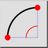
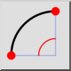
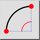
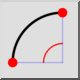

2 Points and Angle
Toolbar / Icon:
 

Menu: Draw > Arc > 2 Points and Angle
Shortcut: A, 2
Commands: arc2 | a2
Toolbar / Icon:
 

Menu: Draw > Arc > 2 Points and Angle
Shortcut: A, 2
Commands: arc2 | a2
Draws an arc using the start point, end point and the included angle.